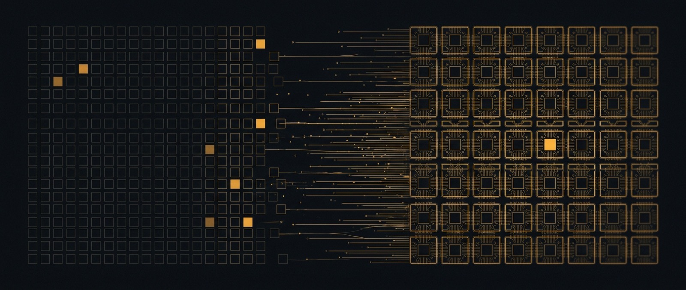

Two lotteries, and the space between them
Machine learning made two lottery arguments seven years apart and never put them in the same room. One says most of a trained network is surplus. The other says the hardware of the day decides whether you can collect on it.

For the past few years I have worked on sparse accelerators, which means my day is spent between two literatures that rarely read each other. One of them removes weights from neural networks and reports how many it removed. The other builds the machines that have to run whatever is left, and reports how long that takes. Both are catalogued well on their own. There are good reading lists for sparse attention, mixture-of-experts routing, KV-cache selection, quantization and pruning, and equally good ones for accelerator microarchitecture, GPU and NPU design, dataflow taxonomies and tensor compilers. What nobody had catalogued was the ground between them, which is unfortunate, because that is where sparsity is actually won or lost. I spent this summer assembling that catalogue, and what follows is the argument that shaped it.
The catalogue this piece came out of. Sparsity in deep learning from pruning theory to silicon, arranged by mechanism so you can read down a column and see a design space.
Two papers, two units
The mismatch survives good faith on both sides. A model-efficiency paper reports the fraction of a tensor it removed; an architecture paper reports wall-clock time on real silicon. Those are different quantities, and for most of the past decade they were close to uncorrelated, because the cost of finding a zero can exceed the cost of multiplying by it. The reasons are unglamorous and they compound. Index metadata competes with the values it describes, so a compressed format can end up larger than the thing it compressed. Gather and scatter destroy the reuse that dense tiling depends on, so the memory system stops cooperating. And a dense multiply-accumulate array has no mechanism for skipping a zero, so it does not skip it: feed a systolic array a tensor that is almost entirely zeros and it will multiply by every one of them, at full speed and full power.
Sparsity ratio is a property of a tensor. Time is a property of a machine. The function between those two is the thing worth studying, and it is built out of formats, dataflows, intersection units, load balancing and sparsity predictors, material that sits scattered across ISCA, MICRO, HPCA, ASPLOS, NeurIPS, ICLR, MLSys and arXiv with no organising principle beyond the date of publication.
Establishing terms
Part of the confusion is that "sparsity" names a dozen different things, and most arguments in this area turn out to be arguments about which one is meant. Weight sparsity, the kind pruning produces, is the oldest and by some distance the least deployed. The forms carrying real production traffic today are newer and stranger. Attention maps go overwhelmingly zero at long context. KV caches hold far more past tokens than any given query attends to. Mixture-of-experts routing touches only a small share of the parameters per token, which has quietly made coarse dynamic sparsity the default architecture of frontier models rather than an efficiency trick applied afterwards. Graph networks inherit adjacency structure that is sparse by nature and irregular by distribution, and recommender embeddings are almost entirely untouched on any given lookup.
What separates these forms is not how many zeros they contain but two other things: where the zeros sit, and when you find out about them. Static weight sparsity is known before the kernel launches, so its cost is paid offline and the hardware can be told in advance. Attention and expert sparsity are discovered at runtime, which means somebody has to predict them cheaply enough to still come out ahead. Every dynamic-sparsity accelerator I know of lives or dies on that predictor, and whatever the predictor costs comes straight out of the saving it was built to capture.
Two lotteries
The clearest way I know to explain the gap is that machine learning produced two lottery arguments seven years apart and never put them in the same room. The first is Frankle and Carbin's lottery ticket hypothesis. Read narrowly it is a claim about initialization; read broadly it is the sharpest version of the observation this entire area rests on, which is that most of a trained network is surplus and the sparse network was already sitting inside the dense one.
"dense, randomly-initialized, feed-forward networks contain subnetworks ('winning tickets') that when trained in isolation reach test accuracy comparable to the original network in a similar number of iterations."
Frankle & Carbin, The Lottery Ticket Hypothesis, ICLR 2019
On that reading sparsity is not a compromise accepted in exchange for accuracy. It is a description of what the network was all along. Which makes the second argument, Sara Hooker's hardware lottery, land all the harder, because it explains why none of that helped.
"…when a research idea wins because it is suited to the available software and hardware and not because the idea is superior to alternative research directions." Such lotteries, she writes, "can delay research progress by casting successful ideas as failures."
Sara Hooker, The Hardware Lottery, CACM 2021
Her warning was aimed squarely at fields in this position: "these lessons are particularly salient given the advent of domain specialized hardware which make it increasingly costly to stray off of the beaten path of research ideas." Set the two arguments side by side and the lost decade makes sense. Fine-grained unstructured sparsity won the initialization lottery and then lost the hardware lottery, and the winning ticket turned out to be both real and worthless, because no shipping datapath could collect on it. GPUs became very good at dense matrix multiplication, dense matrix multiplication became very cheap, and a sparse layer ran at the speed of a dense one because that is what a machine does with zeros it cannot see. None of that was a failure of the algorithms. It was Hooker's mechanism working exactly as she described.
Rigging the draw
What changed is that people stopped waiting to win the hardware lottery and started rigging the draw, and N:M sparsity is the cleanest case of it. Two-of-every-four is not a natural property of trained networks and nobody discovered it in the weight distributions. It exists because a fixed-width multiplexer in front of a multiply-accumulate array can decode it at line rate, which makes it the rare sparsity pattern a dense-throughput machine can actually exploit. NVIDIA built the Sparse Tensor Core around that constraint, and the algorithm side was then asked to hit the pattern; the papers on training into 2:4 followed the silicon rather than the other way round.
That inverts the usual order of things, and it worked, which is why the same inversion now runs through the field. DeepSeek's native sparse attention is the identical move at a different granularity, an "arithmetic intensity-balanced algorithm design" in their own words, with the sparsity trained in from the start rather than applied to a finished model. Both are hardware decisions wearing algorithm clothing, and together they have shifted the research question from what the best mask is to which patterns a model can be trained to accept without losing anything. Those are not the same question, and the second one is set by whoever designs the datapath.
Why sparsity came back
The timing of all this is not an accident. Sparsity returned to prominence because scaling made it load-bearing. Inference moved from compute-bound to memory-bound, so the bytes moved per token became the thing you actually pay for, and moving fewer bytes happens to be the one saving sparsity was always reliably good at. Context windows then grew until the quadratic term dominated everything else, KV caches outgrew the weights they serve, and mixture-of-experts stopped being an efficiency trick and became the default shape of a frontier model.
Every one of those is a sparsity problem that the hardware lottery now rewards instead of punishing, and that is the real change. The algorithms did not suddenly improve. What was scarce moved, and sparsity happened to be holding the right ticket for the new scarcity.
Where I think this goes
I will state my position plainly, with the caveat that I am a PhD student and this field has embarrassed more confident people than me.
I think the co-design inversion is permanent, and I think it is going to get more extreme. The next decade of sparsity will be written by whoever controls the datapath. 2:4 was not a discovery about neural networks; it was a decision about silicon that the algorithm side was then obliged to satisfy. Native sparse attention is the same move. I expect that to become the default posture rather than the exception: an accelerator states the pattern it can decode at line rate, and models are trained into that constraint from initialization.
If that is right, a few things follow. Sparsity patterns start arriving from hardware vendors rather than from ML papers, on hardware release cycles rather than conference cycles. The valuable algorithmic work becomes showing that a vendor-specified pattern is learnable without loss, which is a narrower and less romantic question than the one the pruning literature started with. And the accelerators that win will be the ones flexible enough to support a family of patterns, because committing a fabbed datapath to exactly one sparsity structure is a bet on a research direction that has to hold for the life of the chip.
There is a real risk buried in this, and it is Hooker's own. If the hardware dictates the pattern, we will get very good at the patterns silicon happens to like, and we will never find out what we gave up. The fix for one hardware lottery can be the setup for the next one. The honest response is to make the negotiation genuinely two-way: build datapaths that can be told what to skip at runtime, and stop pretending that the pattern which is cheapest to decode is the one the model wanted.
That is the part I want to spend my time on.
Corrections and papers I missed are the most useful thing you can leave here. Sign in with GitHub to reply; threads are stored as Discussions on this repo.